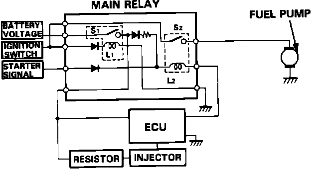

Main Relay (Computer/Fuel System): Description and Operation
Main Relay:

The main relay contains two individual relays, one of which operates the fuel pump. It is located under the left side of the dash, behind the fuse panel assembly.
The first relay is energized when the ignition is turned ON and supplies current to the ECU, the injectors, and the second relay.
The second relay supplies current to the fuel pump. It is energized for two seconds when the ignition is switched ON and continues to supply current while the engine is running. If the engine stalls, current to the fuel pump is switched OFF.